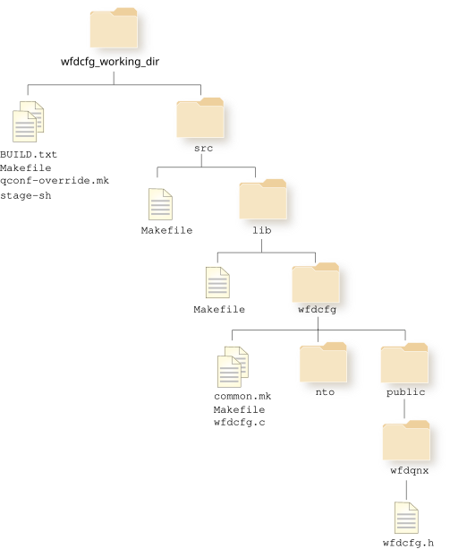

The files from the compressed Wfdcfg archive are extracted onto your host.
The source code for the Wfdcfg library is provided as a compressed archive (.tgz file format). This compressed archive usually contains a single .tar archive.
The Wfdcfg archive is named according to the following convention:
src-lib-wfdcfg-platform-build_date-branch-build_number.file_format
where the variables in the filename are as follows:
| File element | Description |
|---|---|
| platform | This variable is optional. If your archive is specific to your platform, you may see the platform identified in the filename. |
| build_date | Date and time stamp in the format of yyyy-mm-dd |
| branch | The repository branch |
| build_number | The identification number of the particular build |
| build_number | The identification number of the particular build |
| file_format |
|
For example, a Wfdcfg archive can be named: src-lib-wfdcfg-2014-07-31-Moonraker-B556.tgz or src-lib-wfdcfg-imx6x-evk-wfdcfg-2014-07-31-Moonraker-B556.tgz
You can extract the files from the Wfdcfg archive to a directory of your choice. The archive is self-contained and can be installed anywhere. The directory where you extract the Wfdcfg archive will be referred to as wfdcfg_working_dir.
From the command line on your development host:
cd wfdcfg_working_dir
Extract the files from the Wfdcfg archive using the tar command.
For more information on the tar command, refer to the Utilities Reference.
tar -xvf wfdcfg-archive.tgz
If you are on a Windows development host, and you are not using the tar utility, ensure that you are using a compatible file archiver that properly handles symbolic links.
You can manually copy the appropriate files if you find an issue with your symbolic links. For a list of symbolic links in the archive, you can use a command similar to this:
tar -tvf wfdcfg_archive.tgz | grep ^l
After you've extracted the files from the wfdcfg archive, the resulting directory structure looks similar to this:

You'll update the files wfdcfg.h and wfdcfg.c to add extensions that are specific for your display hardware. Refer to Updating Wfdcfg source (adding extensions) for more information on how to modify the Wfdcfg library.
BUILD.txt provides you with some simple directions on how to build your source. stage-sh is a helper script that creates a stage area from where you can build your source. Refer to Building the Wfdcfg library for information on how to build the Wfdcfg library.